"……我们的AI产品，将在三个月内覆盖——"
PPT停在第17页。我的声音开始发飘，像从很远的地方传来。
心脏在跳吗？好像……在跳。又好像不是正常的跳法。
我的手滑离了演讲台。水杯被带翻，水在黑色桌面上缓缓蔓延。
很慢。水流得像放慢了十倍。
怎么所有东西都变慢了。
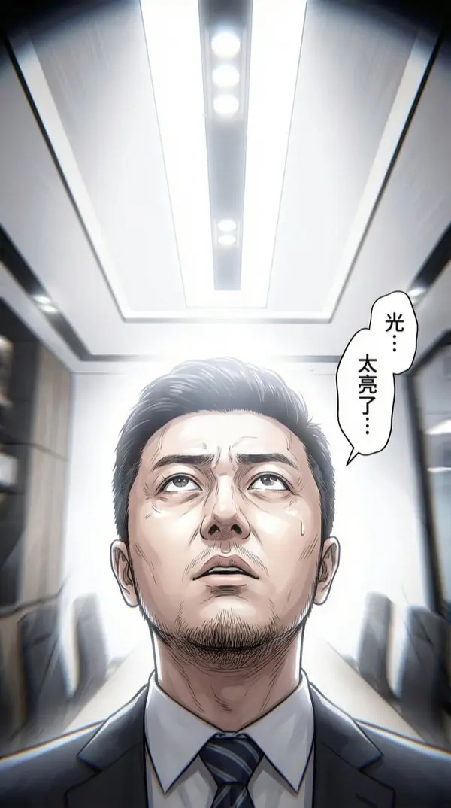
天花板上的灯，越来越亮。
周围的声音一层一层剥落——投资人的椅子声、助理的低语、空调的嗡鸣——全部消失。
只剩下心跳。
越来越慢。越来越慢。
B轮还没完成。
小陈那边……还没来得及谈。
妈还等着我国庆回去。
……
原来死的时候想的不是一辈子，是今天没做完的事。
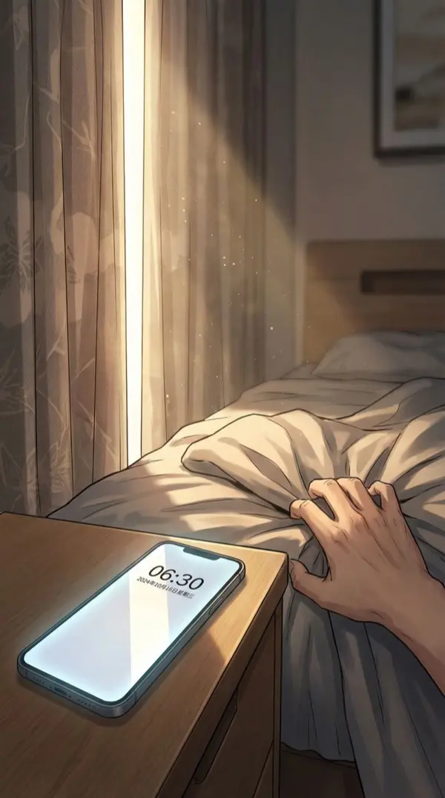
06:30
手机闹钟炸响。
我猛地坐起来，冷汗把T恤浸透了。心脏——在跳。很快，很用力地跳。
我活着？
不对。我刚才明明……
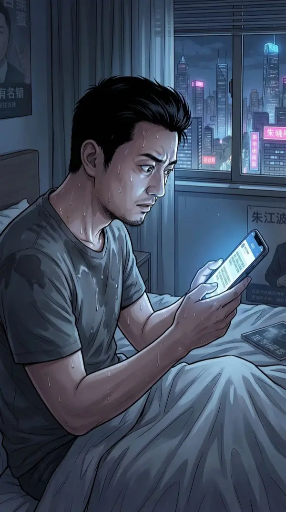
手机屏幕：2024年10月16日 星期三 06:30
和我记忆中的今天早上，一模一样。
微信未读消息——李总发的："期待今天的路演，小朱加油💪"
这条消息我看过了。就在今天早上。几个小时前。
等等，那个"几个小时前"——我死了。
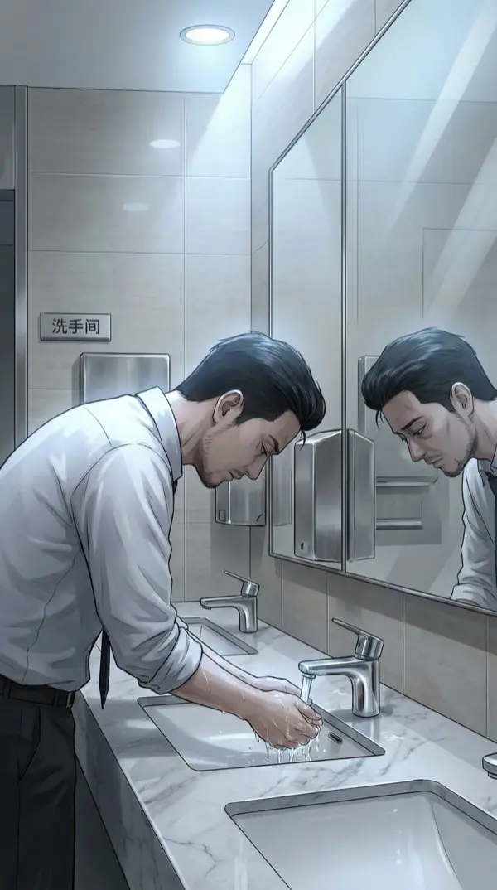
洗手间。水龙头哗哗地流。
我低头洗完脸，抬起头，镜子里的人眼圈发黑，脸色发灰。
活脱脱一个连续加班一个月的IT民工。
……可是，我应该已经死了啊。
死人不会觉得自己丑吧？
我开始一条一条翻消息。
运营总监苏琳："已确认场地和设备，9点半前到位。"——一样。
CTO小陈："PPT最终版已经传到共享盘。"——一样。
前台小王："朱总今天路演别紧张～"——一样。连表情包都一样。
要么是我在做一个极其逼真的梦，要么——时间倒回去了。
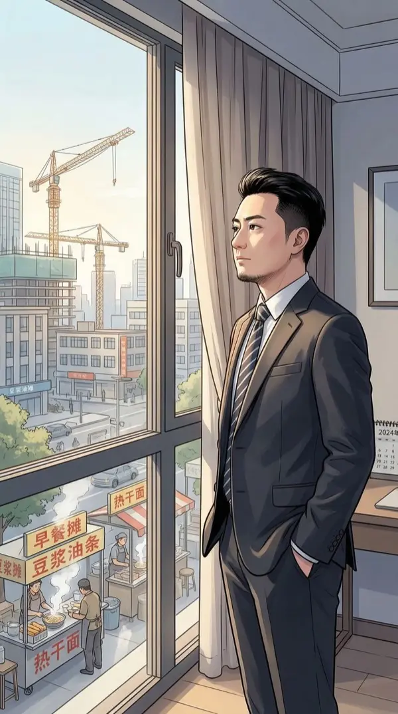
我拉开窗帘。
对面工地的塔吊——在。楼下早餐摊的油烟——在。遛狗大爷——在。
一切和"今天早上"一模一样。
不对，已经不能叫"今天早上"了。应该叫——上一次的今天早上。
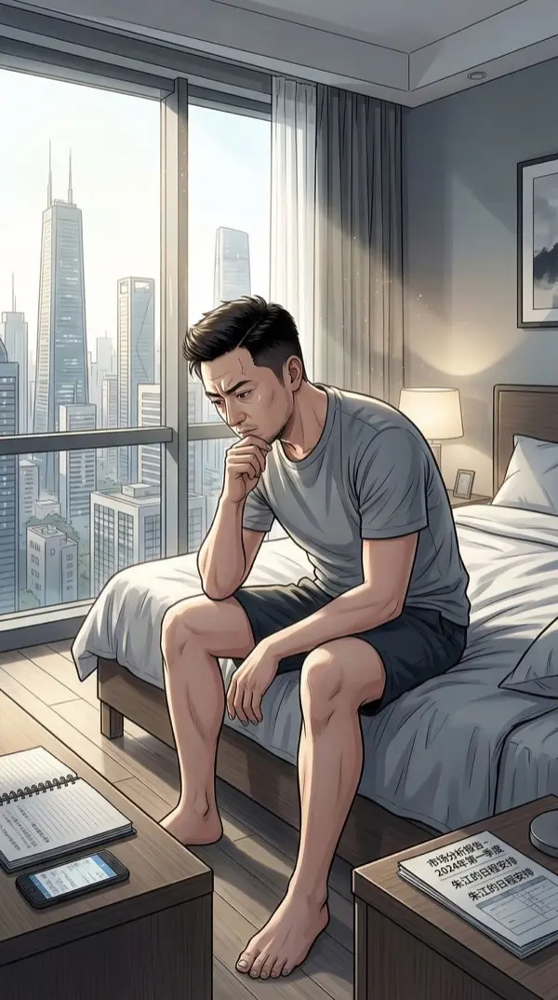
我坐在床边，盯着脚趾头发呆了两分钟。
好。冷静分析。
可能性一：梦。——掐了自己，疼。排除。
可能性二：濒死幻觉。——手机上的日期不会幻觉。排除。
可能性三：时间倒流了。
……如果这是穿越小说，我应该先去买彩票。
可是我连今天的彩票号码都不知道。
创业者果然是最没用的穿越者。
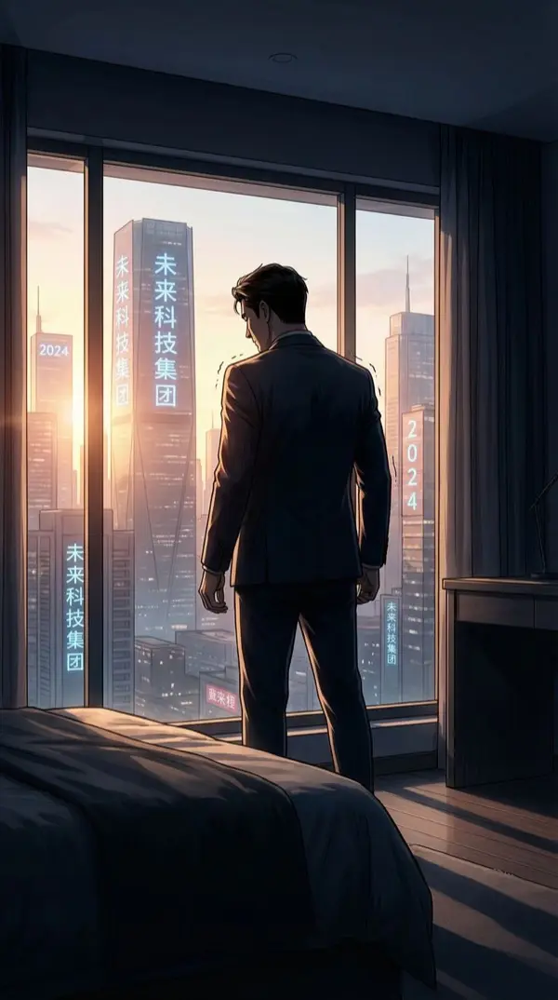
确认了：时间确实重置了。路演会猝死。现在我有一次重来的机会。
问题是——我要怎么用这次机会？
反正路演会猝死，先保命再说。
公司等着B轮活命。而且——如果能重来，为什么不试试做得更好？
既然知道心脏有问题，先搞清楚。
我是创业者。公司比命重要——好吧，不是比命重要，是两条命绑在一起了。
这次，先吃个早饭再说。上次死可能就是因为空腹喝了四杯美式。
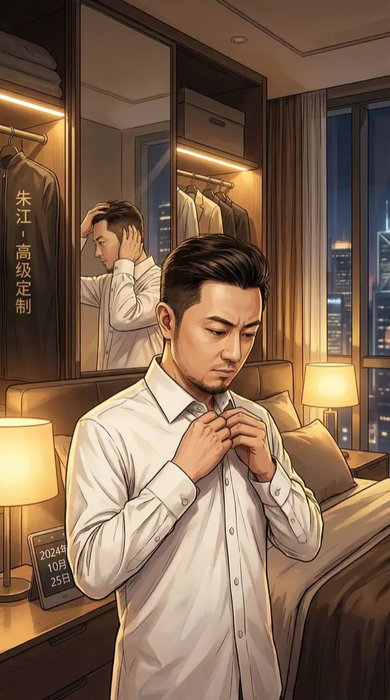
这一次，我没有像上一轮那样抓起手机就冲出门。
换好衬衫。系好皮带。对着镜子理了理头发。
上辈子——呃，上一轮——头发是乱的就上台了。投资人可能觉得我是从网吧出来的。
楼下煎饼果子。
"老板，加两个蛋，多放辣。"
咬了一口，差点流泪。
活着真好。死过一次的人，连煎饼果子都是米其林级别的。
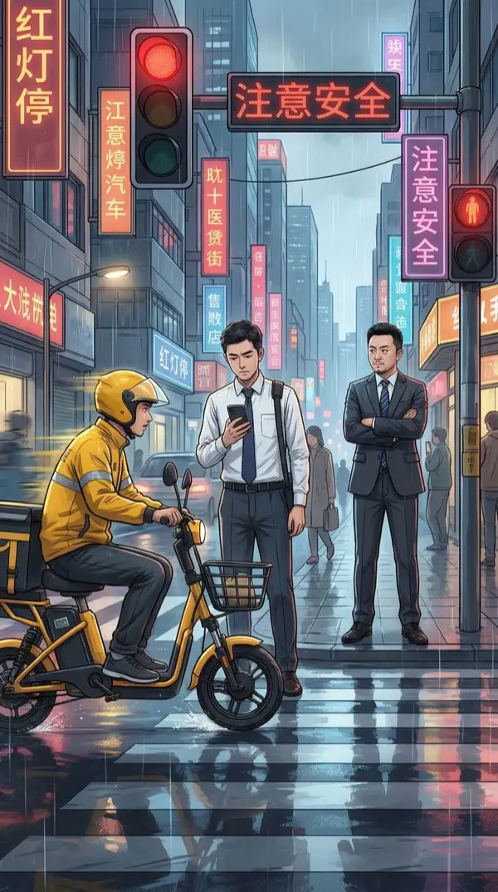
十字路口。红灯。
一个外卖骑手——黄色头盔、电动车贴满贴纸——从我左边冲过去，差点撞到一个看手机过马路的白领。
和上一轮，一模一样的骑手，一模一样的白领，一模一样的差点撞上。
确认了。这不是似曾相识，是精确复制。
到公司。推开玻璃门。
"朱总早！今天路演加油！"
前台小王。笑容、手势、语调——像录好的视频回放。
"谢谢小王。"
上次我连"谢谢"都没说，低头冲进会议室了。这次做个人吧。
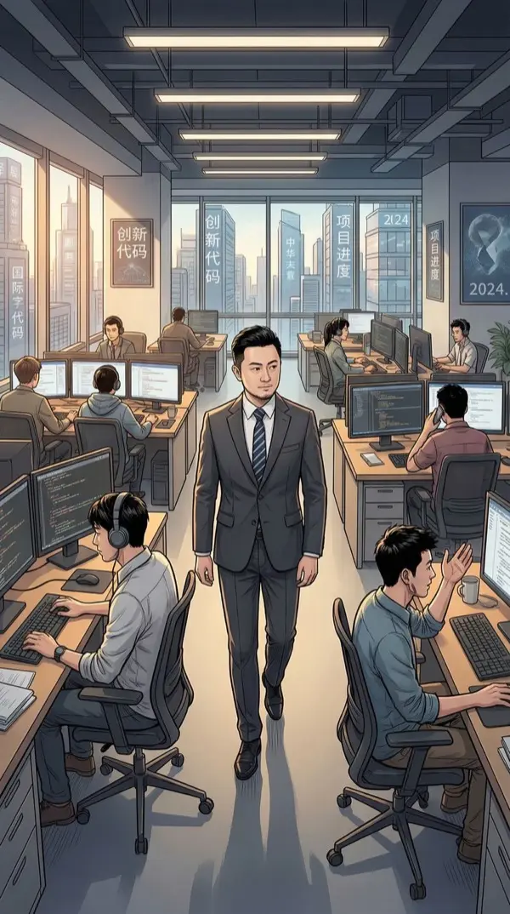
穿过开放工位区。
每个人都在做和上一轮一样的事——小李在调代码，阿伟在和客户打电话，实习生在偷偷刷短视频。
我现在有种诡异的上帝视角。我知道接下来每个人要说什么、做什么。
这种感觉……说实话，有点爽。
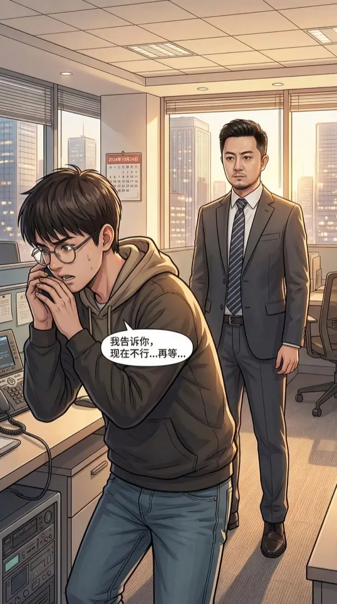
路演准备会。小陈在角落打电话。
上一轮我没注意——太忙了，脑子里全是PPT。
但这一轮，我看得很清楚：他的表情不对。
皱眉。压低声音。挂完电话后顿了两秒，才转过来对我笑。
小陈是我最信任的搭档。从车库创业一路走过来的兄弟。
他那通电话——是打给谁的？
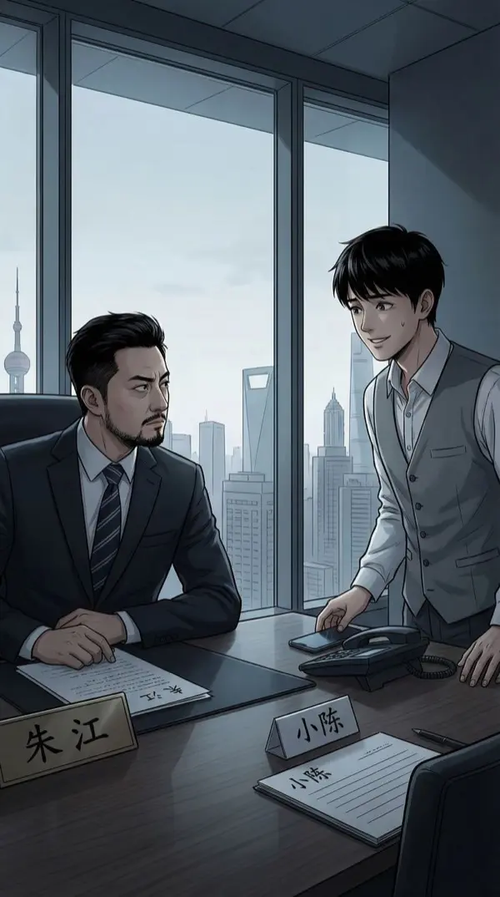
小陈那通电话明显有问题。
兄弟之间，有话直说。
路演优先级最高，别节外生枝。
先收集信息。知道得越多，出手越准。
黑客的第一原则：在目标不知情的情况下，尽可能多地收集信息。
小陈，不是我不信你。是我刚死过一次，不敢信任何人。
9点15分。路演倒计时45分钟。
我坐在会议室，最后过了一遍PPT。但这次不紧张——我已经讲过一遍了。
虽然上次讲到第17页就猝死了，但前16页的反应我都记得。
李总在第5页点了一下头——说明市场规模的数据戳到他了。
第12页他皱了一下眉——竞对分析那页不够有力。
嘿嘿，这回我有"答案"了。
10:00 路演开始。
会议室里坐着五个人。李总居中，两侧是他的投资经理和行业分析师。最后一排角落里——有个我上次没留意的人。
西装革履，不说话，一直在记笔记。
上一轮我死了，没注意到他。这一轮……这人是谁？
"各位投资人好。我是朱江，这是我们的AI产品——"
这次，我的声音稳定，气息充足。吃了早饭的区别。
第5页，我加了一组新数据——昨天半夜刚跑出来的用户增长曲线。上次来不及加。
李总——果然点头了。但这次点头的力度更大。
有了。
第12页——上次李总皱眉的那页。
这次我没用PPT上的内容，直接即兴发挥：
"竞对方面，市面上三家做类似方向的公司，两家数据是假的——我这里有他们真实DAU和我们的对比。"
投资经理抬起头。分析师停下了笔。
李总——嘴角微微上扬。
开了答案的考试，就是这么舒服。
第17页——上次猝死的那一页。
我深吸一口气。心脏在跳，稳稳的。
"……三个月内，我们将实现全域覆盖。B轮融资将用于——"
翻到第18页。第19页。第20页。
上次我没见过的第18页。活着讲完整场路演的感觉，比融到钱还爽。
全场安静了两秒。然后——掌声。
李总站起来，主动伸出手。
"小朱，你今天状态不错。和上次见面比，判若两人。"
李总您不知道，上次您见到的那个我，在这张演讲台后面心脏骤停了。
您要是知道了，估计就不投了——"CEO有猝死风险"不是一个好的投资亮点。
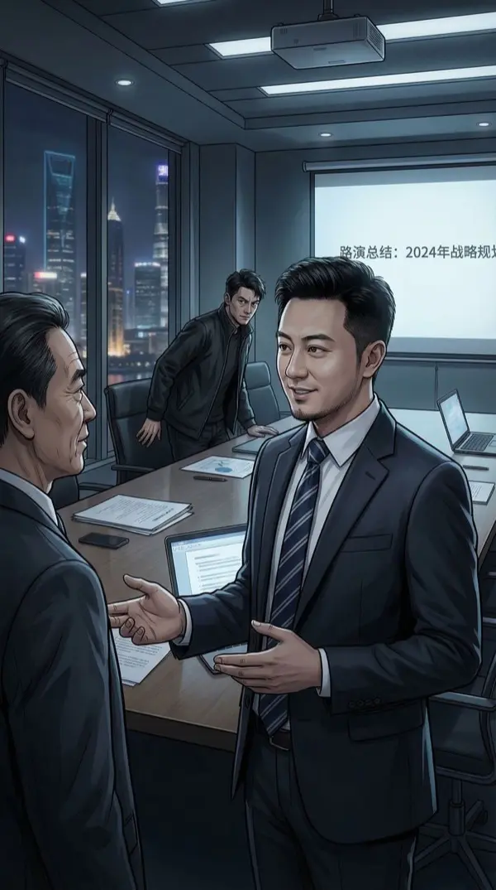
散场。我和李总握手寒暄，余光看到——
角落里那个陌生人站起来，和李总交换了一个极快的眼神。然后默默离开。
上一轮我没活到散场，没见过这一幕。
那个人是谁？为什么在李总的路演里？为什么他们会交换眼神？
我的雷达开始叫了。
走出会议室，走廊里安静得能听见自己的皮鞋声。
这是我第二次路演了，虽然他们不知道。
感觉像开了答案的考试。
但是——
题目突然变了。
那个角落里的人，不在"答案"里。
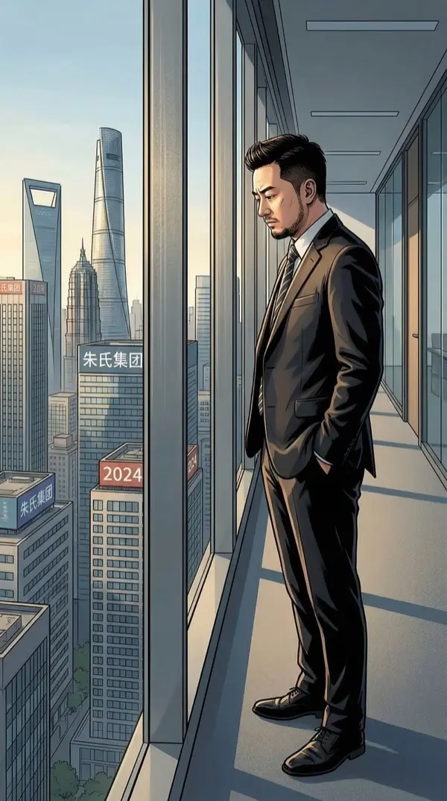
李总和某个不明人物有暗中联系。这可能意味着他在脚踩两条船。
霹雳手段。当场摊牌。
黑客思维。我有时间循环的优势——这次先收集情报，下次循环再行动。
创业者止损思维。鸡蛋不放一个篮子里。
耐心。我最大的武器不是预知，是可以重来。
这一轮先摸清所有的底牌，下一轮再打。
14:30 回到公司。
路演成功的消息已经传开了。小陈在工位上冲我竖了个大拇指，但眼神——
和早上一样，有点飘。
一般人可能注意不到。但我在特种部队学过读微表情——小陈在回避我的直视。
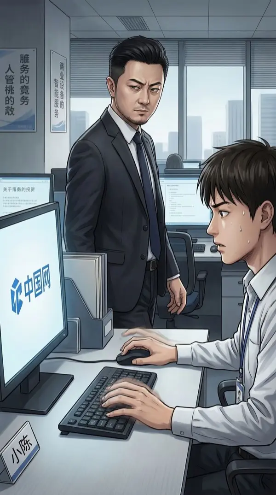
我假装去茶水间，路过小陈工位时扫了一眼他的屏幕——
秒切。他的手速很快，一秒之内从一个页面切到了代码编辑器。
但我的眼睛更快。
我看到了一个logo。蓝色的。某家互联网大厂的招聘页面。
……
我的心沉了一下。比路演台上猝死那一刻还沉。
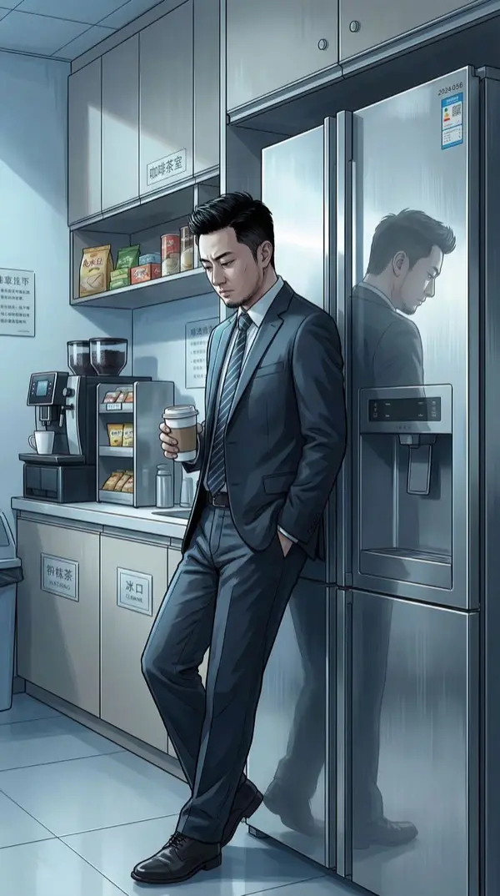
茶水间。我站在饮水机前面，接了一杯水，喝了一口。
温的。
小陈在看大厂的招聘页面。
联合创始人。从车库一起走过来的CTO。
早上那通表情不自然的电话——是猎头？还是对方HR？
冷静。这还不够。需要更多信息。
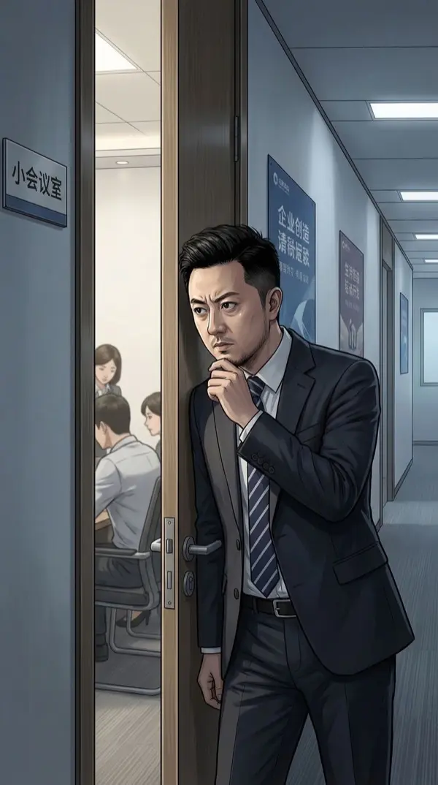
16:47
去洗手间的路上，路过小会议室。门没关严。
苏琳的声音从里面传出来，压得很低，但我听得清楚——
"……对，我今晚给你确认最终名单。最多再加两个人。放心，核心运营全在里面。"
我脚步一顿。
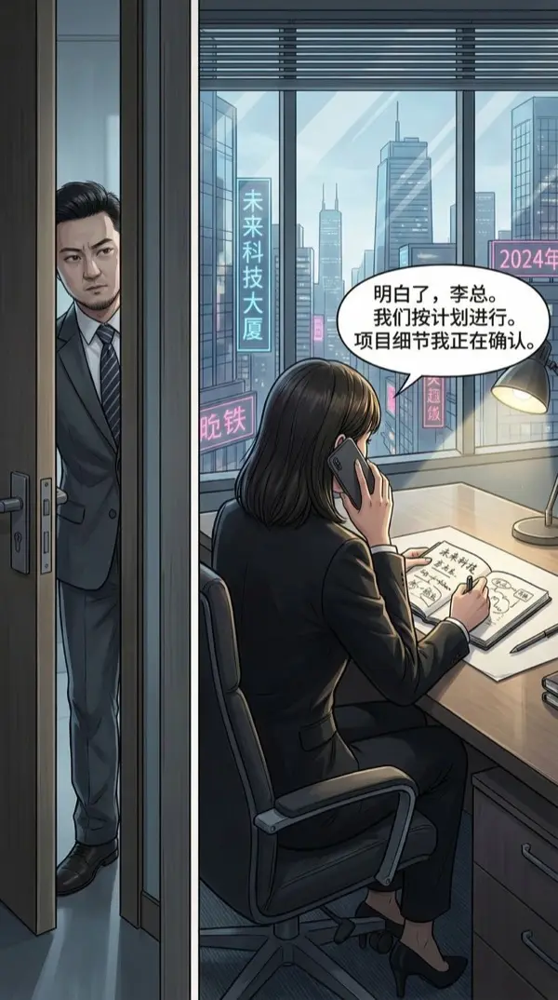
透过门缝看到苏琳的侧影——她背对着门，右手捏着手机，左手在笔记本上划着什么。
"……对，他们那边给的base比这边高40%。年终另算。"
"他们那边"是谁？
"核心运营全在里面"——什么名单？
苏琳在——
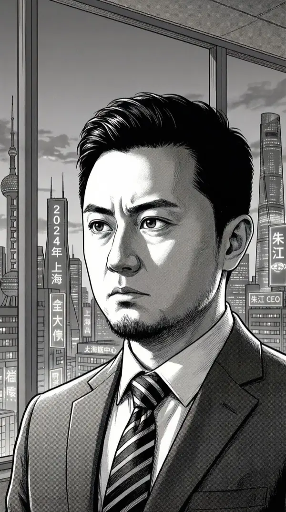
苏琳在策划带人跳槽。
不是一个人走。是带整个核心运营团队。
名单。最终名单。今晚确认。
我的后背出了一层冷汗——比猝死前的那层还冷。
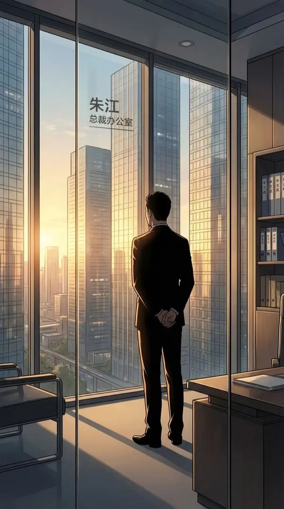
我回到自己的办公室，关上门，站在窗前。
窗外，城市的晚霞很好看。写字楼的玻璃幕墙反射着金色的光。
但我看不进去任何风景。
清单来了——
CTO小陈在看大厂offer。
投资人李总可能脚踩两条船。
运营总监苏琳准备带核心团队叛变。
还有路演会上那个不明身份的人。
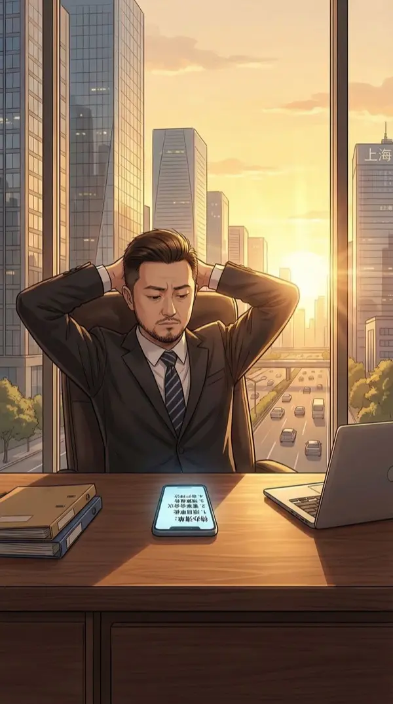
我以为重活这一天是为了搞定路演。
没想到路演只是这一天最小的雷。
我今天的地雷分布：
☑ 路演——已排除
☐ CTO想跑
☐ 投资人搞暧昧
☐ 运营总监在策反
☐ 可能还有我不知道的
创业者的日常：以为今天只有一个地雷，结果挖出来一片雷区。
适合写在墓志铭上。
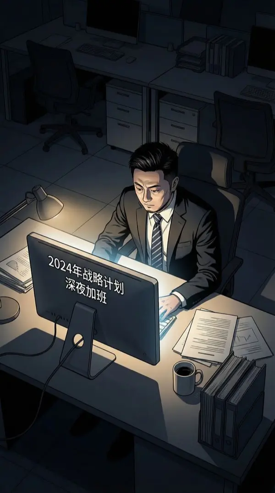
21:30 公司只剩我和加班的后端组。
小陈18点就走了——"有点事"。往常他至少待到22点。
苏琳19点离开，走的时候带了笔记本电脑——她平时从不带电脑回家。
所有蛛丝马迹都在指向同一个方向：这一天，我的公司正在从内部瓦解。
而上一轮的我——死在了路演台上，对这一切一无所知。
23:48
我坐在办公桌前。咖啡已经凉透了。
不敢喝——上次就是咖啡加猝死的组合。
电脑屏幕上开着十几个标签页，全是苏琳跳槽目标公司的信息。
如果今天真的会重置，那我至少要记住——
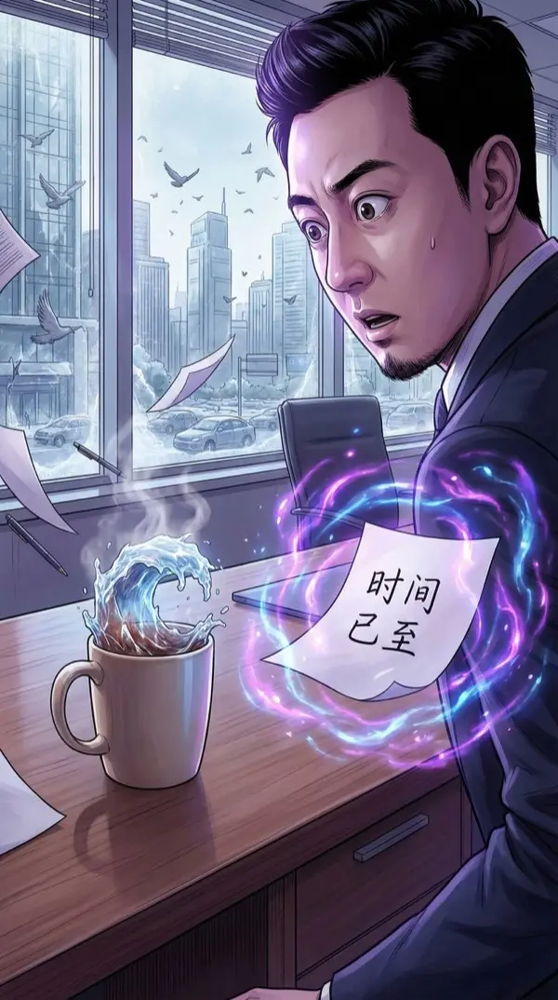
00:00:00
午夜。
手边的咖啡杯——静止了。
杯里的咖啡液面，像凝固的琥珀。空调出风口飘出来的纸条——悬在半空。
世界停了。
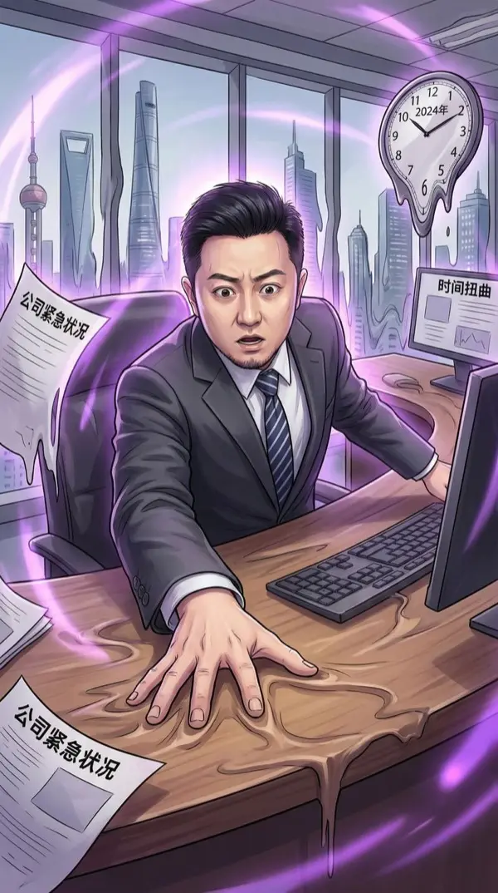
然后，一切开始模糊。
办公桌、椅子、电脑屏幕——像融化的油画，一层一层向边缘流淌。
我想抓住桌子，但手穿过了桌面。
又来了。
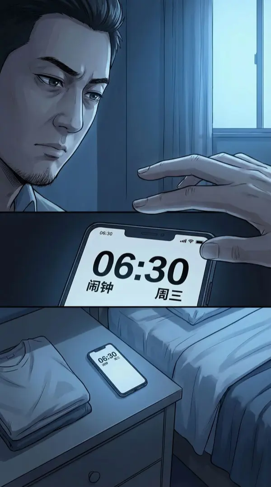
06:30
闹钟。
同一张床。同一个枕头。同一件被冷汗浸透的T恤——不对，这件T恤是干的。全新的一天。
但我没有坐起来。
我躺着。盯着天花板。想了三分钟。
好。
这不是偶然。
这一天被锁死了。
6:30开始，24:00结束。无论我做什么——死也好，不死也好——都会重置。
两次了。
路演、小陈、苏琳、李总……还有什么我没看见的？
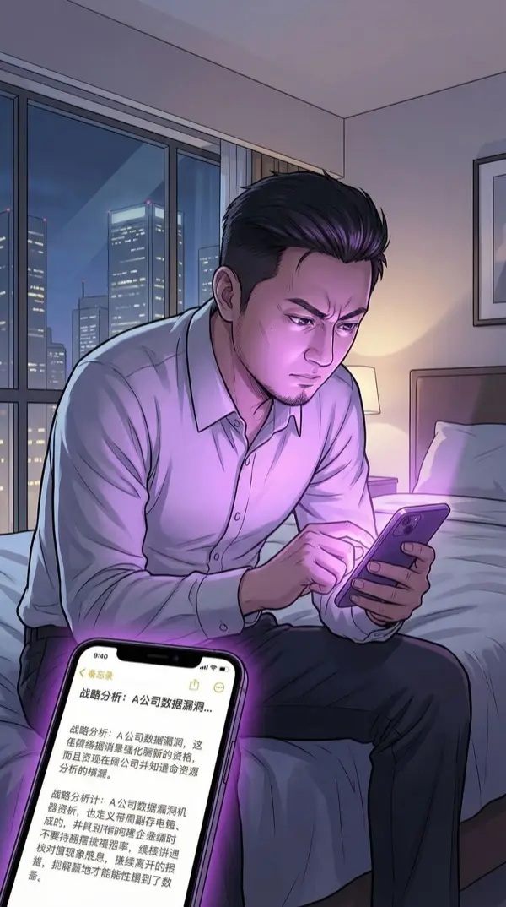
我拿起手机，打开备忘录，开始打字：
循环 #2 · 已知变量：
✅ 路演 → 可控（已验证）
⚠️ 小陈 → 在看大厂offer，电话来源不明
⚠️ 苏琳 → 策划带队跳槽，今晚确认名单
⚠️ 李总 → 路演会有不明人物，疑似双线操作
❓ 未知变量 → ???
我开始像debug一样，调试这一天的每一行代码。
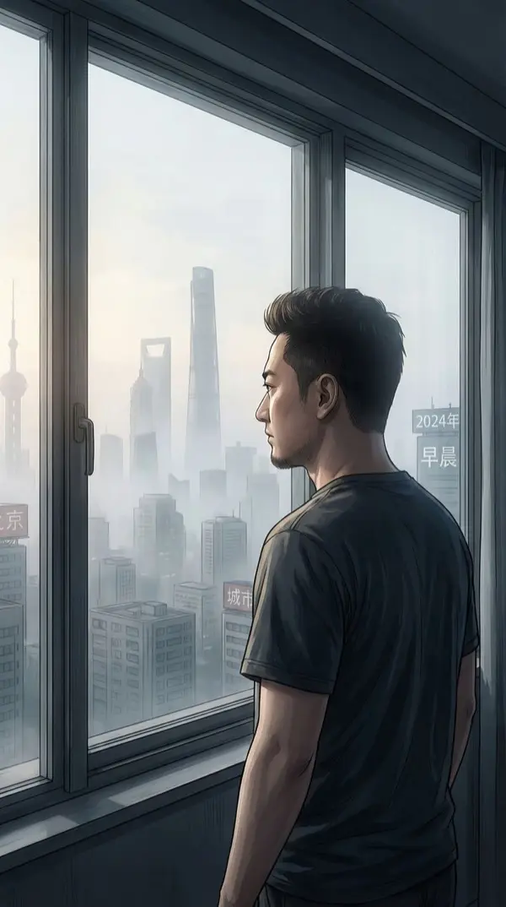
我起身，走到窗前。清晨六点半的城市，雾蒙蒙的。
上一轮我以为问题只有一个——路演。结果这一天烂成了这样。
CTO要跑。投资人脚踩两条船。运营总监在里应外合。
如果这是一个程序——这一天有至少四个并发的bug。
而且它们可能不是独立的。
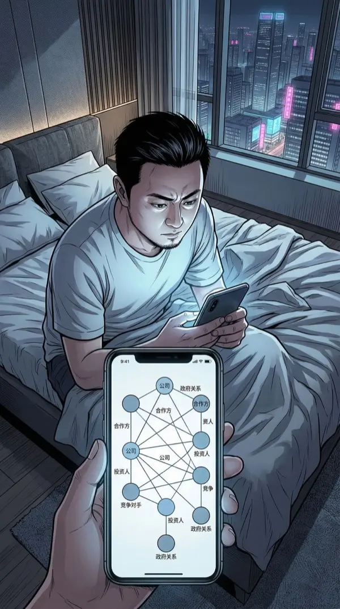
我在备忘录里画了一张关系图：
小陈（CTO）——→ 大厂offer
苏琳（运营）——→ 竞对？带队跳
李总（投资）——→ 不明人物
不明人物 ——→ 竞对？
如果苏琳跳的"对方"= 李总接触的"竞对"
→ 这不是三个独立事件
→ 这是一次协调好的狙杀
……我后背一凉。
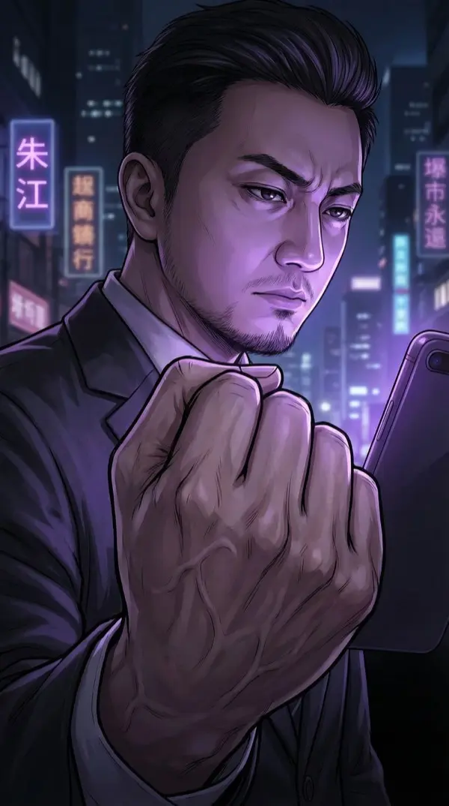
手机屏幕的光映在我脸上。
有人在猎杀我的公司。
挖CTO。挖运营团队。拉拢投资人。三线并进。
如果这一天没有被锁死——如果我没有死在路演台上然后重生——
我会在毫不知情的情况下，失去一切。
但现在——
我有无限次重来的机会。
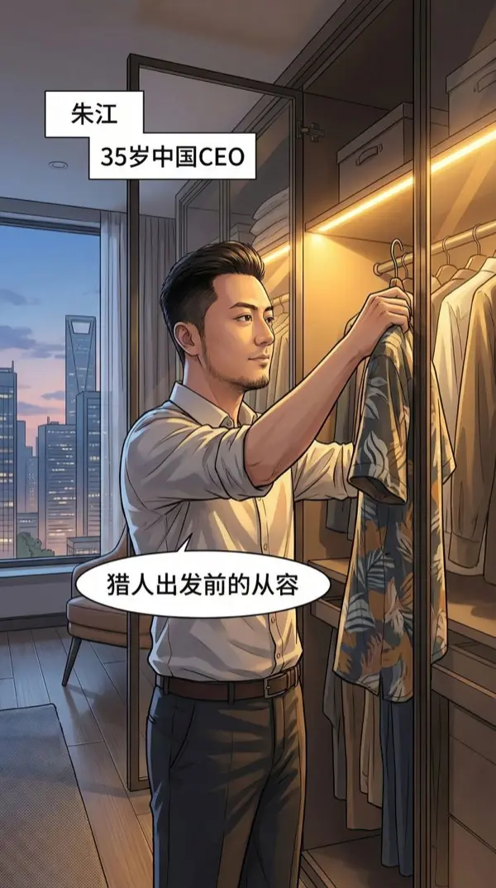
我放下手机。走向衣柜。
这一次，我知道该穿什么了。
不是路演正装——那已经是过去式了。
休闲衬衫。运动鞋。
今天不路演。今天打猎。
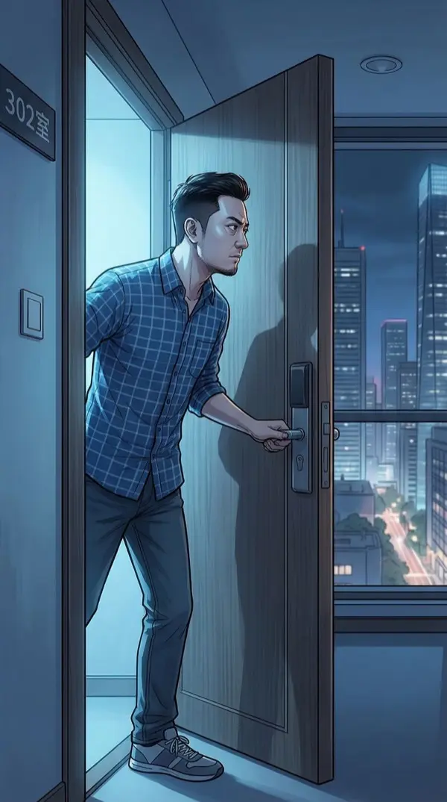
拉开门。清晨的冷空气扑面而来。
循环 #2。不再是懵懂地重活一天。
这次，我要找出所有的暗线。
然后——在未来的某个循环里——
一次性解决所有问题。
第三次循环即将开始——
但我必须先做一个选择。
这一天有四个并发的危机。我只有24小时。就算有时间循环，每一轮也只能集中精力解决一到两个。
先攻哪一个？
第三次循环。朱江开始系统性排查每一条暗线——
留住CTO = 保住技术核心
运营叛变 = 可能带走整个团队
钱到位一切好说
活着才能创业
他选了哪个？答案在第二章。
无限创业日 · V5沉浸式 · 待续